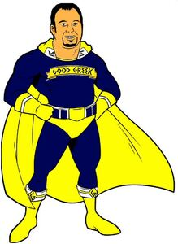

Trade Mark Journal No.2026/006 6 February 2026
WO0000001885332 (16,25,35,36,39,41,42,43)
Office of origin: United States of America

The mark consists of the design of a superhero with pink-beige skin, black hair, black eyes and eyebrows, black goatee, and white teeth wearing a blue suit with a blue and white belt with a yellow buckle, yellow shorts, yellow boots with white and yellow cuffs with black letter "G", yellow gloves with white accents, and a yellow and blue banner design with "GOOD GREEK" in blue on the chest. The cape is yellow with white accents with black letter "G" at neck. The color black is used as accents and shading on the suit and cape.
The mark contains the colours blue, yellow, black, white and pink-beige.
The mark consists of the design of a superhero with pink-beige skin, black hair, black eyes and eyebrows, black goatee, and white teeth wearing a blue suit with a blue and white belt with a yellow buckle, yellow shorts, yellow boots with white and yellow cuffs with black letter "G", yellow gloves with white accents, and a yellow and blue banner design with "GOOD GREEK" in blue on the chest. The cape is yellow with white accents with black letter "G" at neck. The color black is used as accents and shading on the suit and cape.
- Class 16
- Printed comic books; printed coloring books; printed neighborhood guides in the nature of books.
- Class 25
- Tops as clothing; bottoms as clothing; shirts; t-shirts; polo shirts; sweatshirts; hoodies; clothing jackets; headwear; hats; caps being headwear; visors being headwear.
- Class 35
- Real estate marketing services, namely, online services featuring tours of residential and commercial real estate; real estate marketing services; advertising, marketing and promotion services; business consultation services; business development services; providing information about moving and relocation services in the nature of planning and implementing moves of homes and offices.
- Class 36
- Real estate services; real estate agency services; insurance services.
- Class 39
- Moving and storage of goods; packing articles for transport; junk removal; auto transport, namely, providing transportation of goods by automobiles; providing information in the field of transportation; booking of transport; booking of tickets for travel; transport and travel ticket reservation; food delivery; transport and delivery of goods.
- Class 41
- Conducting training courses in best practices for the moving, packing, and storage of goods.
- Class 42
- Software as a service (SaaS) services featuring software for booking and reservation of transport, travel, and temporary accommodations; software as a service (SaaS) services featuring software for delivery services; software as a service (SaaS) services featuring software for ordering and delivery of food, beverages, and groceries.
- Class 43
- Booking and reservation of temporary accommodation; restaurant reservation services.
Agios Mixael LLC
Representative: Mishcon De Reya LLP, Africa House, 70 Kingsway London WC2B 6AH UNITED KINGDOM